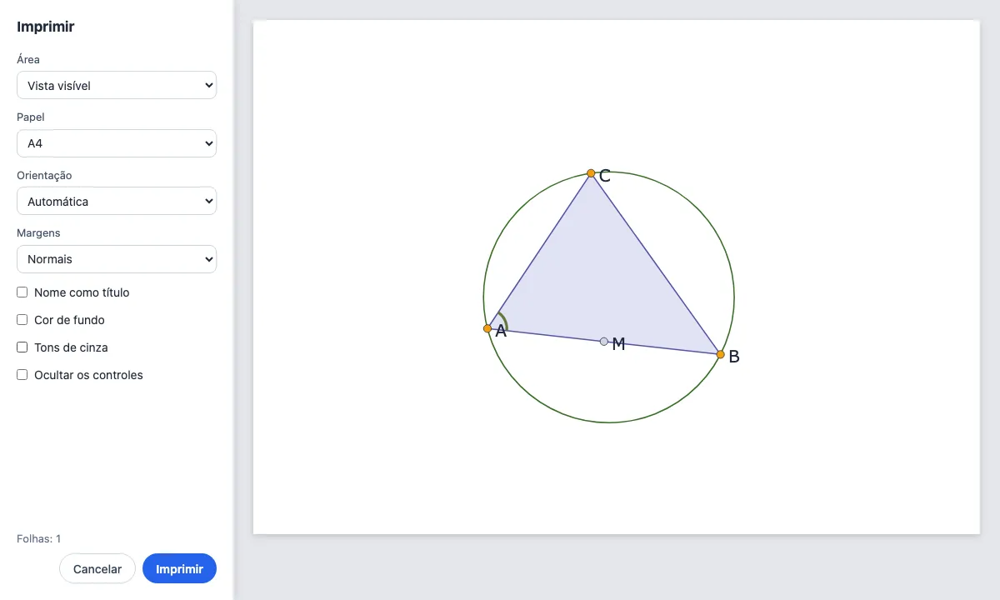
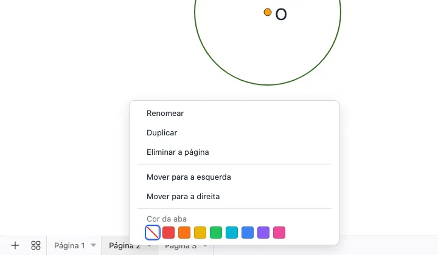

Abrir e salvar
Abrir
Abrir carrega um arquivo:
| Extensão | Origem |
|---|---|
.dgo |
DocGeo, formato nativo |
.dgp |
DGPad, importado |
.ggb |
GeoGebra, importado |
Também é possível arrastar o ícone do arquivo para a página, no editor e no leitor.
A figura aberta substitui a figura atual e esvazia o histórico de desfazer.
Uma figura on-line também abre por um link (veja Compartilhar uma figura por link).
O menu Arquivo também oferece Abrir… (Ctrl O) e Nova figura, que começa com uma figura vazia.
Documentos recentes
Arquivo › Abrir um documento recente lista as dez últimas figuras abertas ou salvas, a mais recente primeiro: no Chrome e no Edge, os arquivos do computador; em todos os navegadores, as figuras abertas por um link. O navegador pode pedir de novo permissão para ler o arquivo. Um arquivo movido, renomeado ou excluído desde então é sinalizado e retirado da lista. Limpar a lista a esvazia.
Importação incompleta
Um elemento do DGPad ou do GeoGebra não suportado é ignorado junto com seus dependentes; a indicação dá a lista (“Não importado: …”). Os detalhes estão em Importação do DGPad e do GeoGebra.
Salvar
, Arquivo › Salvar ou
Ctrl S salva a figura em
.dgo. A vista (zoom, orientação 3D, sistema de
coordenadas) é salva.
No Chrome e no Edge, o DocGeo salva como um aplicativo: o
primeiro salvamento pergunta onde guardar o arquivo, os
seguintes o substituem sem perguntar. Uma figura
.dgo aberta com ou solta na
página é salva de volta no seu arquivo; o navegador pede uma vez
permissão para modificá-lo. Uma figura DGPad ou GeoGebra nunca é
sobrescrita: seu primeiro salvamento cria um arquivo
.dgo. Salvar como… (Ctrl
Shift S) escolhe outro arquivo.
O nome do arquivo aparece no fim da barra de menus; um ponto vermelho indica alterações não salvas. Ele desaparece ao salvar, ou ao desfazer até o estado salvo. Mover ou ampliar a vista não conta como alteração.
Nos outros navegadores (Firefox, Safari), ou quando o DocGeo
está integrado em outra página, salvar baixa a figura com o nome
da figura aberta (figure.dgo para uma figura nova).
.dgo é o único formato de gravação: abrir uma
figura do DGPad ou do GeoGebra e salvá-la a converte.
Recuperar uma figura não salva
Enquanto uma figura tem alterações não salvas, o DocGeo guarda uma cópia dela no navegador. Se o editor se fechar antes de ela ser salva (janela fechada por engano, falha), ela aparece, datada, em Figuras não guardadas no topo de Arquivo › Abrir um documento recente: escolhida, ela volta, ainda marcada como não salva. Essas cópias são guardadas por catorze dias, dez no máximo; Limpar a lista também as apaga.
Essa cópia fica no navegador deste computador: ela não substitui o salvamento. Nada é guardado quando o DocGeo está incorporado em outra página.
Imprimir
Arquivo › Imprimir… (Ctrl P) mostra a pré-visualização das folhas ao lado das suas configurações. Imprimir abre em seguida a impressão do navegador, que também permite salvar em PDF.

A figura preenche a folha até as margens: retas e curvas vão até a borda. No início, nunca é ampliada: traços e rótulos mantêm o tamanho que têm na tela.
- Arrastar sobre uma folha desloca a figura; a roda do mouse amplia ou reduz. A vista do editor não muda.
- Área: Vista visível centraliza a folha no que a tela mostra, sem a parte escondida pela paleta de ferramentas ou pelas propriedades; Só a figura centraliza nos objetos desenhados.
- Papel, Orientação (Automática: conforme a área) e Margens. Mudar essas configurações, a área ou o título reenquadra as folhas.
- Nome como título escreve o nome da figura, ou da página, no alto da folha; Cor de fundo imprime o fundo da figura; Tons de cinza remove as cores; Ocultar os controles remove controles deslizantes, caixas de seleção, campos, listas e botões.
- Numa pasta de trabalho, Todas as páginas imprime uma folha por página.
Esc ou Cancelar fecha a pré-visualização. As configurações se mantêm até o editor ser fechado.
Pastas de trabalho: várias páginas
Uma pasta de trabalho reúne várias figuras, as suas páginas, num
único arquivo .dgo. As suas abas, abaixo da figura,
mostram uma página de cada vez.

- Arquivo › Nova página acrescenta uma página vazia depois das outras: a figura atual passa a ser a página 1. Depois, o botão + no início das abas faz o mesmo, e o botão ao lado lista todas as páginas.
- Um clique direito numa aba, ou na sua seta ▾, abre o menu da página: Renomear, Duplicar, Eliminar a página, Mover para a esquerda ou Mover para a direita, e a Cor da aba.
- Um clique duplo numa aba renomeia a sua página (Enter confirma, Esc cancela); duas páginas não podem ter o mesmo nome. Uma aba arrastada muda de lugar.
- As páginas são independentes: cada uma tem os seus objetos, os seus eixos, as suas macros e o seu histórico de anulação, reencontrado ao voltar a ela. Uma fórmula pode, no entanto, ler um valor de outra página (Ler outra página). As globais dos programas são, pelo contrário, comuns a toda a pasta de trabalho (Blocos e tartaruga).
- Salvar grava toda a pasta de trabalho, cada página tal como foi deixada; a página mostrada é a que se abrirá. Uma pasta de trabalho reduzida a uma página volta a ser uma figura simples.
O leitor também mostra as abas. Uma figura integrada numa página web mostra apenas a página que estava exibida ao salvar.
Compartilhar uma figura por link
Uma figura colocada on-line abre por um link: o endereço do
editor, seguido de ?url= e do link do arquivo,
colado como está.
https://doctools.org/apps/docgeo/editor.html?url=https://www.dropbox.com/scl/fi/…/thales.dgo?rlkey=…&dl=0O link do arquivo pode vir de:
| Serviço | Link a copiar |
|---|---|
| Google Drive | link de compartilhamento, acesso “Qualquer pessoa com o link” |
| Dropbox | link de compartilhamento |
| OneDrive |
link de compartilhamento de uma conta pessoal
(https://1drv.ms/u/c/…)
|
| Nextcloud | link de compartilhamento público, sem senha |
| Site |
endereço do arquivo (.dgo,
.dgp ou .ggb)
|
O formato é reconhecido pelo conteúdo do arquivo, e seu nome
aparece no fim da barra de menus. O arquivo on-line nunca é
modificado: salvar cria um arquivo .dgo no
computador.
?url= vem por último no endereço: tudo o que vem
depois faz parte do link
(editor.html?lang=en&url=…).
Incorporar uma figura em uma página web
Uma figura publicada on-line também pode ser exibida, manipulável, em uma página web: veja Incorporar em uma página web.
Idioma
O DocGeo usa o idioma do navegador; ?lang= o impõe
(ar, de, el,
en, es, fr,
hi, it, nl,
pt, zh, zh-TW). O idioma
define também o nome dos comandos (PontoMédio,
Mittelpunkt…); os nomes em inglês são
entendidos em todos os idiomas.